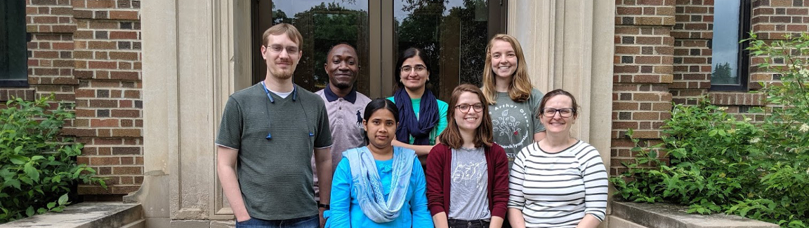

Bess Vlaisavljevich
Computational Chemistry, Inorganic Chemistry
Group Website:
By taking an approach where multiple methods are used in combination, fundamental insights can be made in complex systems: where the complexity may arise either from the number of atoms or from strong electron correlation. Our research aims to tackle diverse problems in inorganic chemistry, f-element chemistry, and materials science. Applications include controlling spin in heavy element chemistry, information storage/electronic devices, catalysis, environmental sensors, and more.